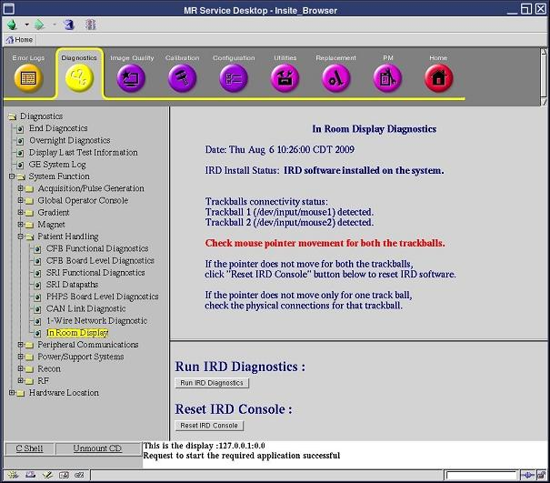

Proprietary to General Electric
Direction 5670000, Rev# 1
Optima MR450w 1.5T Service Methods
Module Version 2.0, Version Date 11/6/09
Proprietary to General Electric |
Diagnostics >> System Function >> Patient Handling>> In Room Display
Diagnostics >> Hardware Location >> Magnet Room>> In Room Display
Illustration 1: In Room Display Diagnostics

The In Room Display Diagnostic obtains status information on the connectivity of the trackball devices and provides a mechanism to restart only the In Room Display (IRD) without restarting the host PC. This diagnostic is needed to determine if the trackballs are detected by the host PC. If the Patient Handling Power Supply (PHPS) loses power, a replacement of the IRD console/trackball/IRD interface box, or re-connection of USB/DVI-D/fiber optic cables may cause the trackballs to lose connectivity.
In Room Display
Operator Control Panel
In Room Display Interface Box
In Room Display software must be installed.
Click [Run IRD Diagnostics] to determine the trackball connectivity status.
If the In Room Display Diagnostics indicate that the trackballs are detected, confirm that none of the trackballs could move the pointer on the IRD. Proceed to step 3 only if:
Trackball 1 and trackball 2 are detected, and
Trackballs on the Operator Control Panel are not moving the pointer
Click [Reset IRD Console] to restart the IRD.
Wait for about two minutes until the IRD comes up.
Confirm that the IRD is up and both trackballs move the mouse pointer on the IRD.
The In Room Display is reset and the trackball function works to move the cursor on the In Room Display.